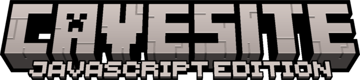

Toggles developer mode. This can be useful in debugging or editing the game as it exposes several tools to be used. Press F9 + H for help about developer mode.
v1.0.0
v1.0.0

BlockJS API patch r1
BlockJS patch r3, 0 mods loaded
Multiplayer
Singleplayer
Create World